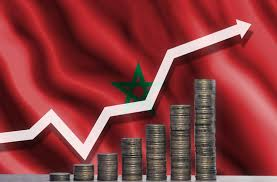
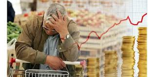
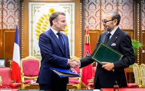

النمو الاقتصادي في المغرب سنة 2025
خلال سنة 2025، عرف الاقتصاد المغربي تطوراً إيجابياً بفضل الاستثمارات في مجالات الطاقة المتجددة، خاصة الطاقة الشمسية والريحية. ساهمت هذه الاستثمارات في تقليص الاعتماد على الخارج وتعزيز الاكتفاء الطاقي الوطني.
إضافة إلى ذلك، ساهم القطاع الفلاحي بدوره في دعم الناتج الداخلي الخام،حيث ارتفعت قيمة الصادرات الفلاحية بنسبة 12% مقارنة بالسنة الماضية. أما قطاع السياحة، فقد عرف انتعاشاً ملحوظاً بفضل الحملات الترويجية وتحسن البنية التحتية السياحية.
كل هذه المؤشرات تدل على أن المغرب يسير في اتجاه تحقيق نمو مستدام، رغم التحديات المتعلقة بالتضخم والبطالة التي ما زالت تحتاج إلى حلول هيكلية.
التضخم وتأثيره على القدرة الشرائية
من أبرز التحديات الاقتصادية التي برزت خلال هذه السنة مسألة التضخم، حيث ارتفعت أسعار المواد الأساسية مثل القمح والزيوت بنسبة تتراوح ما بين 8% و15%، وهو ما أثر بشكل مباشر على القدرة الشرائية للمواطن.
الحكومة حاولت التخفيف من حدة هذا التأثير عبر برامج دعم اجتماعي تستهدف الفئات الأكثر هشاشة، مثل دعم غاز البوتان والدقيق، إلى جانب تقديم مساعدات مالية مباشرة للأسر محدودة الدخل.
ورغم هذه الجهود، فإن الحل المستدام يبقى في تنويع مصادر الإنتاج وتشجيع الصناعة المحلية لتقليل التبعية للاستيراد.
آفاق الاستثمار الأجنبي في المغرب
المغرب أصبح وجهة مفضلة للمستثمرين الأجانب بفضل الاستقرار السياسي والموقع الجغرافي الاستراتيجي كبوابة نحو إفريقيا. المشاريع الكبرى مثل ميناء طنجة المتوسط والمنطقة الصناعية في القنيطرة تعزز من جاذبية البلاد للاستثمار.
خلال 2025، ارتفعت قيمة الاستثمارات الأجنبية المباشرة بنسبة 9%، خاصة في قطاعات السيارات والطيران والتكنولوجيا الحديثة. هذا التوجه يعكس الثقة التي أصبحت تحظى بها المملكة كمركز إقليمي للأعمال.
من المتوقع أن يستمر هذا الزخم خلال السنوات القادمة، بشرط تسريع وتيرة الإصلاحات الإدارية وتحسين مناخ الأعمال.